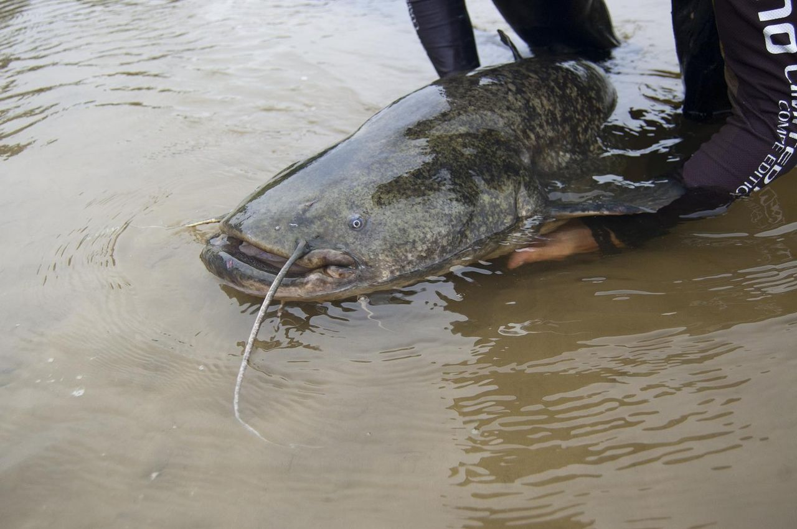
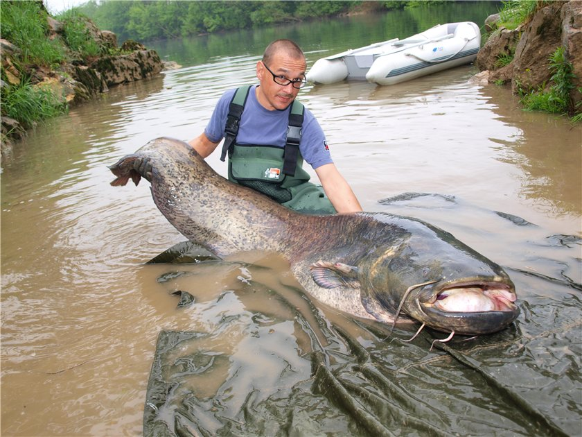

Сом звича́йний, або європе́йський (Silurus glanis) — риба з роду сом (Silurus) ряду сомоподібних (Siluriformes). Прісноводна донна річкова риба, що живе на глибоких ділянках річок, глибоких протоках і старицях, в озерах і водосховищах, також у солонуватих водах лиманів. Найбільша прісноводна риба в Європі. Цінна промислова риба.
За зовнішніми ознаками сома легко відрізнити від усіх інших риб. У нього величезна тупа голова, велика паща зі «щіткою» — кількома рядами дрібних загнутих всередину зубів. Сом має двоє вусів на верхній щелепі і чотири вусики — на нижній. Вуса є своєрідними щупальцями, за допомогою яких сом відшукує їжу навіть у темряві. Очі в сома дуже маленькі. Сом має довгий анальний плавець, що переходить у довгий хвостовий плавець. Жировий плавець відсутній, непарні плавці не мають шипів. Тіло зверху темне, черево світле. Сом має колір, відповідний типу ґрунту, на якому він мешкає: наприклад, «піщані» соми — світліші, «кам'яні» — темніші. Іноді трапляються соми-альбіноси.
Тіло голе, без луски, покрите шаром слизу.
 
Сом звичайний — не тільки найбільший за розміром у роді сом, а й одна з найбільших прісноводних риб на планеті та найбільша прісноводна риба в Україні. Довжина тіла сомів може сягати 5 м, вага — 100 кг у віці 80–100 років. Останніми роками соми більші за 100 кг не виловлюються. Причиною цьому є значний промисловий пресинг і браконьєрство. Існує чимало інформації про гігантських сомів, що сягають 250–300 кг, але документальних підтверджень існування таких сомів немає.
Поширений у Європі на схід від Рейну в Південній та Східній Європі, у басейнах Балтійського, Чорного, Каспійського і Аральського морів, Ладозького та Онезького озер. Мешканець прісних вод, проте може виходити на нагул у солону воду морів. Надає перевагу теплій воді; чим північніше, тим соми трапляються в меншій кількості і меншого розміру. Ареал на півночі обмежений Ленінградською областю та півднем Фінляндії, де соми рідко досягають ваги 10 кг.
В Україні живе в басейнах всіх річок. Найчисельніший у пониззі Дунаю, Дністрі, у басейні Дніпра. У західних районах нечисельний, трапляється в гірських течіях до висоти 400 м. Також трапляється в окремих ділянках Чорного моря, зокрема був помічений біля острова Зміїний.
Зазвичай все життя проводить в одній ямі, якщо тільки надзвичайні обставини не змусять його шукати інше місце (як, наприклад, пошуки їжі, нерестові та зимувальні міграції). Сом веде одиночний спосіб життя, лише деяке скупчення можна спостерігати в зимувальних ямах (іноді по кілька десятків, а то й сотень особин) або у масивних укриттях (повалені дерева, затоплені судна тощо).
Перші 2–3 роки молоді соми також воліють триматися зграями, зазвичай спостерігається це в багатих кормом місцях. Соми ведуть переважно нічний спосіб життя. У спекотні дні можуть виходити до поверхні води. Вони дуже чутливі до холоду. Соменята — рухливіші й часто активні вдень. Вночі у пошуках корму соми виходять на мілководдя до берегів. Сом не любить каламутну воду і тому в дощову погоду, коли в річку надходить каламутна вода, він прагне піти з ями до поверхні. Присутність сомів у водоймі іноді можна виявити за поодинокими голосними сплесками протягом ночі.